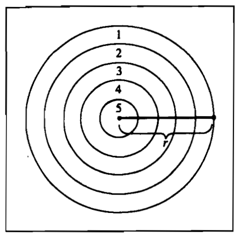
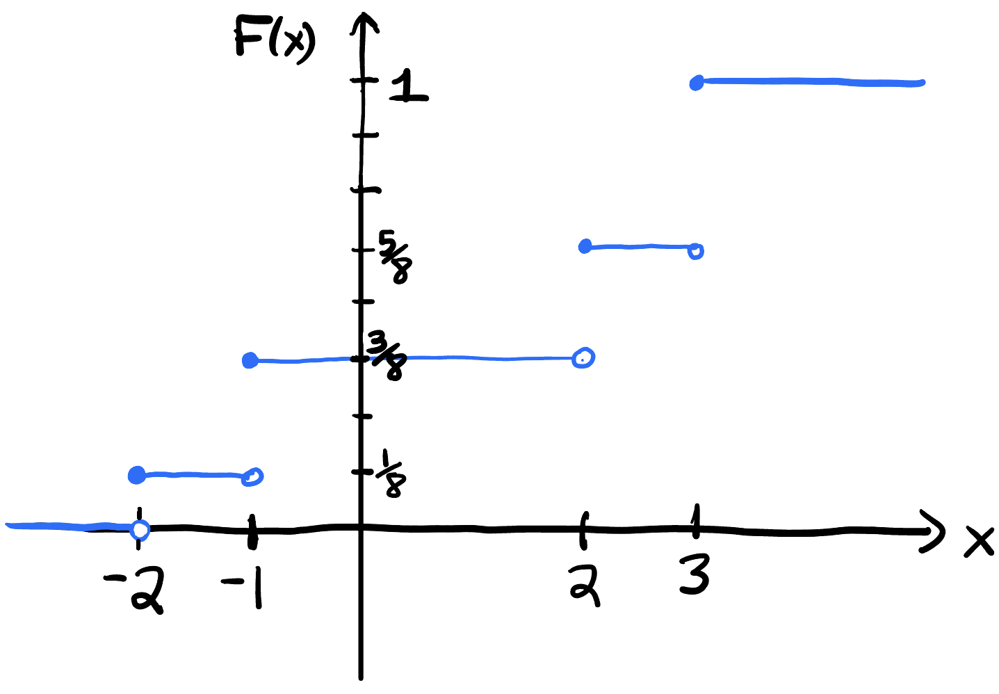

Midterm 1 Study Guide
This is currently a draft. Until a formal announcement is issued on Canvas, everything below is subject to change.
Midterm Exam 1 will take place on Thursday October 8 during your lab section. There will be 7 problems, and they will break down as follows:
- (an undisclosed check on your visual intuition)
- probability rules
- counting
- counting
- conditional probability
- conditional probability
- discrete random variables
Below are new practice problems for each of these areas, as well as guidance about what course materials to refer to if you want more review on a particular topic.
On the exam you are allowed both sides of one 8.5” x 11” sheet of notes, prepared by you and you alone. You can create it however you wish: handwritten, on a computer, etc.
Do not skimp on the cheat sheet! Students in past semesters have neglected their cheat sheets to their detriment. Get an early start, and give it some elbow grease.
Probability spaces
Problem 1
Out of the students in a class, 60% are geniuses, 70% love chocolate, and 40% fall into both categories. Determine the probability that a randomly selected student is neither a genius nor a chocolate lover.
Problem 2
Suppose that \(A\) and \(B\) are mutually exclusive events for which \(P(A) = 0.3\) and \(P(B) = 0.5\). What is the probability that…
- either \(A\) or \(B\) occurs?
- \(A\) occurs but \(B\) does not?
- both \(A\) and \(B\) occur?
- Are \(A\) and \(B\) independent? Why or why not?
Problem 3
Let \(S\) be a sample space, let \(A,\, B\subseteq S\) be events, and define a new set
\[ A-B = \{x\in S:x\in A\text{ and }x\notin B\}. \]
- Draw a well-labeled picture of \(A\), \(B\), \(S\), and the set \(A-B\);
- Write down an equivalent expression for \(A-B\) that only makes use of our three basic operations: union, intersection, and complement;
- Prove that \(P(A-B)=P(A)-P(A\cap B)\).
Problem 4
Let \(A,\, B\subseteq S\) be events in a probability space that might overlap. I claim that:
\[ P(A^c\cap B^c)\geq 1 - P(A)-P(B). \]
- Use words and pictures to explain why the claim is true;
- Prove the claim. Make sure you are explicit about which rules or axioms you are using.
Problem 5
Let \(A\), \(B\), and \(C\) be three arbitrary events, and let \(D\) denote the event that “exactly one of these three events occurs.”
- Draw a cartoon of \(A\), \(B\), \(C\), and \(D\);
- Use the three basic set operations (union, intersection, and complement) to express \(D\) in terms of \(A\), \(B\), and \(C\);
- Show that
\[ P(D)=P(A) + P(B) + P(C) - 2P(A \cap B) - 2P(A \cap C) - 2P(B \cap C) + 3P(A \cap B \cap C). \]
Want more review?
- Lecture notes on probability spaces, axioms, and rules;
- Problem Set 1: problems 4 - 8;
- Problem Set 2: problems 2 - 3.
I included this at the end of the lecture notes on probability rules:
- Draw a picture. Probability behaves like area, so see if you can make sense of the theorem statement by drawing and shading blobs;
- Take hints from the statement. The statement of the theorem to be proven often gives a hint at what tools will be used. In “\(P(A)=1-P(A^c)\),” the presence of “1” tips you off that the first axiom will probably show up. In “\(P(A)\leq P(B)\),” the presence of an inequality tips you off that the second axiom will probably show up, and so on. In the future for example, if the theorem statement has probabilities subtracted somewhere, maybe that’s a clue that the complement rule or inclusion/exclusion will be used;
- Look out for “the move.” I cannot guarantee that in 100% of all proofs, you will take a disjoint decomposition and apply additivity, but if that’s not literally what you do, you’re probably still using some other tool that was itself enabled by “the move” (eg. the complement rule). Anyway, “the move” is all about taking complicated sets and busting them into simpler disjoint pieces so that you can add. It’s always worth a try.
Furthermore, the lecture notes on probability rules provide models for the structure, level of detail, and amount of discussion that is generally expected, though you will get some grace on a timed exam.
Counting
Problem 6
Suppose you are dealt six cards from a well-shuffled, standard deck of 52.
- What is the probability of getting 3 of one rank and 3 of another?
- What is the probability of getting 4 of one rank and 2 of another?
- What is the probability of getting 3 aces and 3 of another rank?
- What is the probability of getting 4 of one rank and 2 aces?
- What is the probability that all 6 cards are in the same suit?
- What is the probability that all 6 cards are consecutive (ie a hand with 3 hearts, 4 spades, 5 spades, 6 clubs, 7 hearts, and the 8 diamonds)? Assume that the ace can only be the high card;
- What is the answer to the previous question if we allow the ace to be either high or low?
- What is the probability of receiving the ace, king, queen, jack, 10 and 9 all in hearts?
Problem 7
Congratulations! You and two of your friends are now proud owners of brand-new library cards. In order to use your new cards, all you and your friends need to do is create four-digit PINs, with numbers \(0\) - \(9\) available (in theory) at each position. Predictably, all of you have different ideas of what an acceptable PIN is (odd or even, leading zeros or not, etc.).
- You are fairly chill about what you want in a PIN – all you want is an even PIN, and you’re totally fine if it starts with a zero. How many possible PINs fit your preference?
- One of your friends is a bit more persnickety – they want a PIN divisible by \(5\), and they cannot stand PINs starting with a zero. How many possible PINs fit this friend’s preferences?
- Your other friend has some more…particular preferences – they have an affinity for the number \(16\) and thus want the digits \(1\) and \(6\) to appear in that exact order at some point in the PIN. Further, they also despise PINs starting with a zero. How many possible PINs fit this friend’s preferences?
Problem 8
The United States Senate contains two senators – one senior and one junior – from each of the \(50\) states.
- If a committee of eight senators is selected, what is the probability that it will contain at least one of the two senators from a certain specified state?
- If a committee of twenty senators is selected, what is the probability it will contain \(15\) junior senators and \(5\) senior senators?
- What is the probability that a group of \(50\) senators selected at random will contain one senator from each state?
Problem 9
A deck of 52 cards contains four aces. If the cards are shuffled and distributed in a random manner to four players so that each player receives 13 cards, what is the probability that all four aces will be received by the same player?
Want more review?
- Lecture notes on counting theory;
- Lab 2 worked examples;
- Lab 3 worked examples;
- Problem Set 1: problems 9 - 10;
- Problem Set 2: problems 4 - 8;
- Problem Set 3: problems 2 - 3;
- Odd-numbered exercises in DeGroot & Schervish Chapters 1.6 - 1.8, 1.12.
I included this at the top of Lab 3:
- (do as little counting as possible) Let’s face it: counting, like integration, is a huge pain in the ass. So we don’t want to do any more than we have to. Your first step should always be to simplify the problem as far as you possibly can using set theory and the probability rules: is this event the union of other events? are those events disjoint? might the complement be easier to work with? is there a partition that could help me? Only after you have exhausted all of those options should you count;
- (clarify what a single outcome consists of) If I am studying the result of four coin flips, a single outcome is not H versus T. It’s a string like HHTH or TTTH. Once you’re clear on what an outcome consists of, decompose it into its distinct traits. In this example, each of the four flips is a trait. Once you’ve decomposed an outcome into traits, you can invoke the counting principle: count the traits separately and multiply. At a very high level, that’s “all we are doing,” but things can get elaborate;
- (clarify the role of order and replacement) You will probably do this in tandem with the surrounding items, but until you’ve answered the questions “does order matter” and “am I replacing or not” for yourself, you have no clue what tool you need to use;
- Pro-tip: “order” may not really mean “order.” When we ask “does order matter or not,” really what we are often asking is: “does it matter who gets what?” In other words, when we draw balls from the jar to fill our \(k\) slots, are those slots distinguishable or not? Are they named? Are they labeled? Do they have distinct identities or roles? If so, then the order in which the balls are drawn corresponds to “who got what.” If “who gets what” is relevant in your application (eg. if Ethel getting red and Seamus getting blue counts as a distinct outcome from Ethel getting blue and Seamus getting red), then order matters. The birthday problem below is a classic example of this;
- (count \(S\) first) In all of these counting problems, at some point you must apply \(P(A)=\#(A)/\#(S)\). I typically recommend that you start at the bottom and work your way up. So figure out \(\#(S)\), and then move on to \(\#(A)\). \(\#(S)\) will often be easier to compute, and the process of doing so will force you to clarify what you need to clarify from above, which will help with \(\#(A)\) later.
Conditional probability
Problem 10
In a standard deck of \(52\) cards, 3 (Jack, Queen, and King) of the 13 ranks are collectively known as the “face cards” of the deck. Recall that a standard deck of \(52\) cards also has \(4\) suits (Hearts, Diamonds, Clubs, and Spades).
Suppose you deal out two cards from the deck. What is the probability that they are both face cards given that they are both hearts?
Problem 11
An urn contains 5 white and 10 black balls. Four tickets labeled 1, 2, 3, and 4 reside in a box. A ticket is drawn at random from the box, and that number of balls is randomly chosen from the urn, without replacement.
- What is the probability that all of the balls drawn are white?
- If we learn that all balls drawn from the urn are white, what is the conditional probability that the #3 ticket was drawn?
Problem 12
Let \(S\) be the set of all permutations of \(a\), \(b\), \(c\), together with the triples \(aaa\), \(bbb\), and \(ccc\). Imagine we draw an outcome randomly from this set. Define the event \(A_k=\{\text{the kth spot is occupied by the letter a}\}\) for \(k=1,\,2,\,3\). Compute the probabilities \(P(A_k)\), \(P(A_i\cap A_j)\), \(P(A_1\cap A_2\cap A_3)\), and comment on the independence of the three of events;
Imagine we roll two fair, six-sided die. Compute \(P(A)\), \(P(B)\), \(P(C)\), \(P(A\cap B)\), \(P(A\cap C)\), \(P(B\cap C)\), and \(P(A\cap B\cap C)\) for the following three events and comment on their independence:
\[ \begin{aligned} A&=\text{first die is 1, 2, 3}\\ B&=\text{first die is 3, 4, 5}\\ C&=\text{the sum of the two rolls is 9}. \end{aligned} \]
Problem 13
Suppose that \(A\) and \(B\) are independent events. Prove that \(A^c\) and \(B\) are also independent events.
Problem 14
A quality-control engineer comes to inspect the machines in a light-bulb manufacturing factory. The factory uses two models of machines:
- ORION machines produce defective lightbulbs with probability \(p_O\),
- NOVA machines produce defective lightbulbs with probability \(p_N\).
- The engineer picks one of the ORION machines to inspect and gets it to produce \(n\) lightbulbs. Each of the \(n\) lightbulbs is produced independently of one another. What is the probability that exactly two of the \(n\) lightbulbs are defective?
- Next, the engineer chooses a machine at random from the factory floor and gets it to produce \(n\) lightbulbs. Given that two of the \(n\) lightbulbs are defective, what is the probability the engineer selected an ORION machine? Assume 2/3 of the machines in the factory are ORION, and 1/3 are NOVA;
- Simplify your answer in the previous part in the case that the defect probability is the same for both machines (\(p_O=p_N\)). Compare to the probability of selecting an ORION machine at random before knowing how many defective lightbulbs the machine produced. Explain why the probability changes or stays the same.
Problem 15

Jerry Lewis is throwing darts at the board pictured in Figure 1. It has the following properties:
- The board has radius \(r\);
- The board is partitioned into five rings, each with the same “thickness” \(r/5\);
- The board is mounted on a wall of area \(A\).
Jerry is not very skilled. His dart is guaranteed to reach the wall and stick someplace, but beyond that, the probability that it lands in any given region is just proportional to that region’s area.
Task: Derive a general formula for the conditional probability that a dart lands in ring \(i\) given that it hits the board and not the wall. Your formula should be a function of \(i=1,\,2,\,3,\,4,\,5\). Check that these probabilities are nonnegative and sum to one.
Problem 16
You shuffle a standard deck of 52 playing cards, and then you reveal the cards one at a time until you see the first ace. What is the probability that the first ace will be revealed on the 28th card?
Want more review?
-
Lecture notes with worked examples;
- The lil’ app on disease testing;
- Problem Set 2: problems 9 - 10;
- Problem Set 3: problems 4 - 8;
- Problem Set 4: problems 2 - 3;
- Odd-numbered exercises in DeGroot & Schervish Chapter 2.
Discrete random variables
Problem 17
Signore Fibonacci has created a a balanced, six-sided die whose faces are labeled, naturally, 1, 2, 3, 5, 8, 13. He gives a pair to Enzo, who rolls them repeatedly, eager to get double 13s. Let \(X\) be the number of times he has to roll the pair of dice in order to see double 13s for the first time.
- What is the pmf of \(X\)?
- What is the expected value of \(X\)?
- Find a closed-form expression for \(P(X\geq m)\).
Problem 18
Let \(D \sim \text{Geometric}(p)\), and fix positive integers \(n\) and \(k\). What is \(P(D = n + k \,|\, D > k)\)? Does this look familiar?
Problem 19
Let a random variable \(X\) have the cdf \(F\) pictured here:

- Compute \(E(X)\);
- Draw the cdf of the random variable \(Y=|X|\).
Problem 20
A printing office prepares \(n=30\) exam booklets labeled \(1,2,\dots,30\) and intends to give booklet \(i\) to student \(i\). Unfortunately, the stack is randomly shuffled and then distributed so that each student receives exactly one booklet. Assume every one of the \(30!\) assignments is equally likely.
- Let \(X\) be the number of students who receive their own booklet. Write \(X\) as a sum of indicator random variables and compute \(E(X)\);
- Let \(Y\) be the number of mutual swaps, i.e. the number of unordered pairs \(\{i,j\}\) with \(i\neq j\) such that student \(i\) receives booklet \(j\) and student \(j\) receives booklet \(i\). Write \(Y\) as a sum of indicator random variables and compute \(E(Y)\).
Want more review?
- Lecture notes;
- Distribution explainers: binomial, geometric, Poisson;
- Lab 5;
- Problem Set 2: problem 8;
- Problem Set 3: problems 9 - 10;
- Problem Set 4: problems 4 - 10.